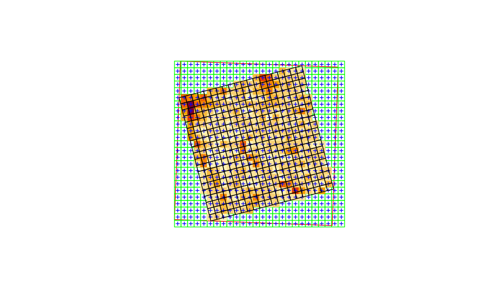

R/warp.R
st_warp.RdWarp (resample) grids in stars objects to a new grid, possibly in an new coordinate reference system
st_warp( src, dest, ..., crs = NA_crs_, cellsize = NA_real_, segments = 100, use_gdal = FALSE, options = character(0), no_data_value = NA_real_, debug = FALSE, method = "near" )
| src | object of class |
|---|---|
| dest | object of class |
| ... | ignored |
| crs | coordinate reference system for destination grid, only used when |
| cellsize | cellsize in target coordinate reference system |
| segments | (total) number of segments for segmentizing the bounding box before transforming to the new crs |
| use_gdal | logical; if |
| options | character vector with options, passed on to gdalwarp |
| no_data_value | value used by gdalwarp for no_data (NA) when writing to temporaray file |
| debug | logical; if |
| method | character; see details for options; methods other than |
method should be one of near, bilinear, cubic, cubicspline, lanczos, average, mode, max, min, med, q1 or q3; see https://github.com/r-spatial/stars/issues/109
For gridded spatial data (dimensions x and y), see figure; the existing grid is transformed into a regular grid defined by dest, possibly in a new coordinate reference system. If dest is not specified, but crs is, the procedure used to choose a target grid is similar to that of projectRaster (currently only with method='ngb'). This entails: (i) the envelope (bounding box polygon) is transformed into the new crs, possibly after segmentation (red box); (ii) a grid is formed in this new crs, touching the transformed envelope on its East and North side, with (if cellsize is not given) a cellsize similar to the cell size of src, with an extent that at least covers x; (iii) for each cell center of this new grid, the matching grid cell of x is used; if there is no match, an NA value is used.
#> stars object with 2 dimensions and 1 attribute #> attribute(s): #> geomatrix.tif #> Min. : 74.0 #> 1st Qu.:107.0 #> Median :123.0 #> Mean :126.8 #> 3rd Qu.:132.0 #> Max. :255.0 #> dimension(s): #> from to offset delta refsys point values #> x 1 20 1841002 1.5 PROJCS["WGS 84 / UTM zone... TRUE NULL [x] #> y 1 20 1144003 -1.5 PROJCS["WGS 84 / UTM zone... TRUE NULL [y] #> sheared raster with parameters: -5 -5new_crs = st_crs(4326) y = st_warp(x, crs = new_crs) plot(st_transform(st_as_sfc(st_bbox(x)), new_crs), col = NA, border = 'red')